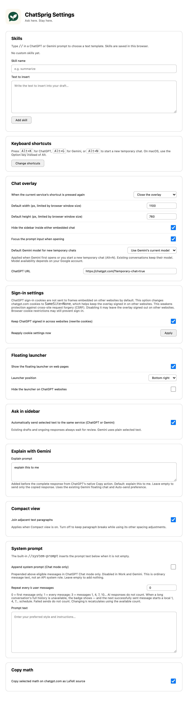

Conversation flow.
Pass text between chats, explore side questions without derailing the main thread, and keep the branches tidy.
Ask in sidebar
ChatGPTGeminiOn chatgpt.com or gemini.google.com, select any part of an answer and choose Ask in sidebar. Just that selection goes to the floating chat of the same service — no reload, no new conversation, and nothing else from the page.
Good to know
- Auto-send (Settings → Ask in sidebar) is on by default. Turn it off to drop the selection into the prompt and add your own question first.
- Existing drafts are preserved; the selection is appended after a blank line. If the floating chat is still generating, the text waits as a draft.
- With Copy LaTeX enabled, selected formulas arrive as LaTeX source.
- Selecting text alone never sends anything.
Explain with Gemini
Second opinionEach ChatGPT answer gets a Gemini sparkle in its action row. Click it and the complete response — taken from ChatGPT's own Copy action — goes to the Gemini floating chat, prefixed with explain this to me. Your clipboard is left untouched.
Good to know
- Edit the prefix in Settings → Explain with Gemini. An empty prefix sends just the response.
- Follows the shared Auto-send preference and preserves existing Gemini drafts.
/btw — side questions in a branch
ChatGPTNative branchesIn a saved conversation, type /btw your question and press Enter. ChatSprig uses ChatGPT's native branch to copy the conversation so far, then asks your question in a floating window. The main thread receives nothing — the detour stays a detour.
Good to know
- Typing
/b,/btor/btwhighlights the suggestion; Enter completes it without sending. You can also pick /btw from ChatGPT's own/menu. - Chat and Work branches keep their source mode. Shift + Enter still inserts a newline.
- Wait for the current response to finish before branching. If anything fails, your draft stays put.
- Branches use ChatGPT's normal retention unless the source URL is explicitly temporary.
Branches, always within reach
Hover Branches · N above the prompt to list every branch of this conversation; click to pin the list open. The three most recent ready branches sit on the right for one-click access. Titles and URLs are remembered locally, so after a reload a branch reopens without being created or asked again.
A branch tree in your sidebar
NewIn ChatGPT's history sidebar, branch chats nest under the conversation they came from — branches of branches go one level deeper, each with a guide line. It works for /btw branches and for ChatGPT's own Branch · … chats, even ones made in another browser. Hover a source and click Clean · N to delete every branch below it.
Good to know
- A group sits where its topmost member appears, within the same native list (Pinned, Recents or a project).
- Native branches are matched once to the loaded conversation with the same source title that shares the most copied messages; the match is remembered.
- Clean asks for confirmation, uses ChatGPT's normal delete, keeps the source, and returns you to the source if you were viewing a deleted branch.
Write faster.
Reusable prompts and standing instructions that arrive exactly when you need them.
Skills: prompts on //
ChatGPTGeminiSave text templates in Settings → Skills. Type // at the start of a line or after a space in any ChatGPT or Gemini prompt, keep typing to filter, then ↑ ↓ and Enter. The skill is inserted as editable text — never sent. Esc closes the menu.
Good to know
- Custom skills stay in this browser (
chrome.storage.local). //system-promptinserts your current Settings → System prompt text. If none is set, it opens Settings and keeps your draft.
Your system prompt, on a schedule
ChatGPT Chat modeThe document-plus switch at the bottom of ChatGPT's model picker turns on Append system prompt. Write the text in Settings and choose Repeat every k user messages: 0 = first message only, 1 = every message, 3 = messages 1, 4, 7, 10…
Good to know
- Shown only when ChatGPT Chat mode is positively identified. Work, Gemini and unknown modes never get instructions appended.
- The count follows the current conversation branch; AI responses and regenerations don't count. Unknown history skips appending.
- Manual sends and Ask in sidebar follow the same rule. The text is ordinary message text, not an API system role.
Read better.
A calmer layout for long answers, and math you can actually reuse.
Compact view for long reads
ChatGPTLive slidersToggle Compact view at the bottom of ChatGPT's model picker. The gear opens live sliders — line spacing (1.2–2.4), paragraph spacing (0–24px), list item spacing (0–12px) and symmetric side margins (0–25%). Release a slider and the choice syncs across tabs, including inside the floating window.
Good to know
- Defaults: 1.65 line height, 8px paragraphs, 3px list items, 12% margins. Reset restores them.
- Join adjacent text paragraphs (Settings → Compact view) is on by default; turn it off to keep paragraph breaks.
- Intelligent UI cards keep their native width and typography. Turning Compact view off restores ChatGPT's layout.
Copy math as LaTeX
ChatGPTCopy any answer that contains math and you get clean LaTeX source — inline \( … \) and display \[ … \] — instead of the scrambled glyphs a normal copy produces. Ready for Overleaf, Notion or your notes.
The details.
Shortcuts, settings, installation and exactly what the extension can access.
Keyboard shortcuts
| Action | Windows / Linux | macOS |
|---|---|---|
| Open / switch to ChatGPT | Alt + K | Option + K |
| Open / switch to Gemini | Alt + G | Option + G |
| New temporary chat in the current service | Alt + N | Option + N |
| Skill menu in a prompt | // then type to filter · ↑ ↓ Enter · Esc | |
| Side question in a branch | /btw your question + Enter | |
| Open settings | Click the ChatSprig toolbar icon | |
Remap browser commands at chrome://extensions/shortcuts. The fixed page shortcuts keep working as a fallback — even inside the embedded prompt.
Settings that sync with Chrome
Click the toolbar icon. Preferences sync through Chrome Sync; skills and branch records stay local to this browser.

Scroll — this is the real settings pageInstall
chrome://extensions, enable Developer mode, then Load unpacked. Plain JavaScript, no build step.Privacy & permissions
No developer-operated analytics, advertising or conversation backend. Messages go straight to OpenAI or Google. ChatSprig never reads or summarizes the page around you — chats only receive what you type, paste or explicitly select.
| Access | Why |
|---|---|
| Web-page content scripts | Launcher, shortcuts and the overlay. On ChatGPT: prompt focus, embedded sidebar hiding, LaTeX copy. |
| Storage | Synced preferences; local skills and BTW branch metadata. |
| ChatGPT cookies | Cross-site sign-in inside the overlay, when cookie rewriting is enabled. |
| Declarative network rules | Remove frame-blocking headers from ChatGPT and Gemini subframes only. |
SameSite=None; Secure so the overlay stays signed in. This relaxes SameSite-based CSRF protection. Turning it off stops future rewrites but doesn't restore cookies already changed. Google cookies are never rewritten.Know the limits
- Chrome internal pages, the Web Store, some PDF viewers and restricted pages can't host the overlay — a failed shortcut shows a
!badge. - The embedded frame blocks pop-ups and top-level navigation, so some sign-in flows need a normal tab.
- “Temporary” follows each provider's own retention rules; it doesn't mean no data is kept.
- Gemini supports the overlay and Ask in sidebar; LaTeX copy, Compact view and /btw are ChatGPT-only.
Ask here. Stay here.
Free, open source, and no account of ours to sign up for.